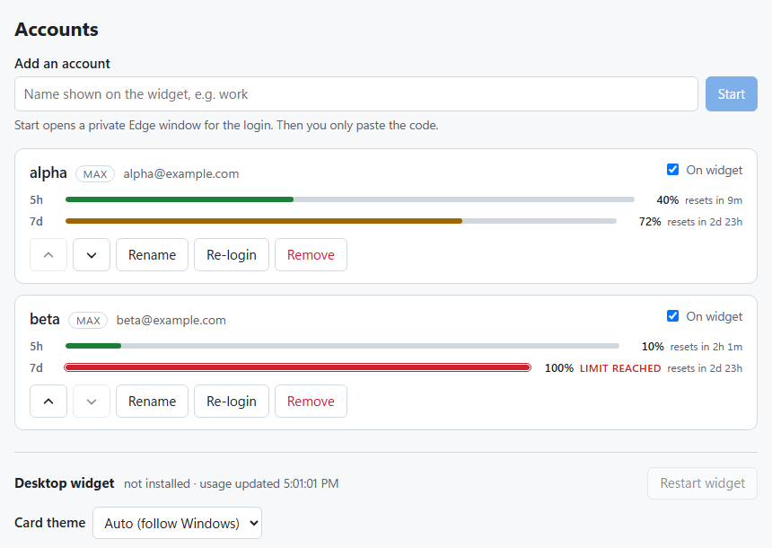
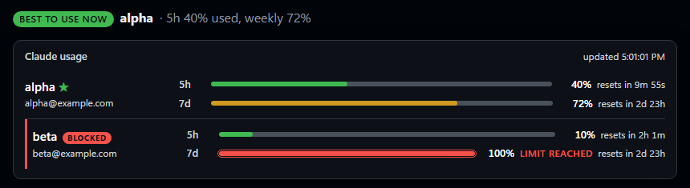

Every Claude account's usage, in one widget
A small card on your Windows desktop and a web page that show the 5-hour and weekly limits of all your Claude accounts, with reset countdowns. Adding an account is: type a name, sign in, paste the code.

1Install (once per PC)
Open Windows PowerShell (Start menu, type "PowerShell"), paste this and press Enter. You don't need Git or anything else first.
It installs what's missing (Claude Code, Node.js, the widget, the Account Manager), sets both to start with Windows, and adds two shortcuts: Claude Usage (the widget) and Claude Accounts (the web page). It's safe to run again; it skips anything already done and never touches your accounts.
2Add your accounts
Open Claude Accounts (shortcut, the widget's right-click menu → Manage accounts, or http://127.0.0.1:47291). For each account:
- Type a short name (e.g.
work) and click Start. A fresh Edge window opens with the Claude sign-in page. It shares no cookies with anything on your PC. - Sign in with that account's email and click Authorize.
- Copy the code the page shows, paste it into the Account Manager and click Connect. It shows which email got connected.

3Watch usage
The desktop card updates by itself within seconds of any change. In the browser, the Usage tab shows the same numbers bigger, with live countdowns and the best account to use right now.

Light or dark: switch the page at the top right (Auto / Light / Dark). The desktop card has its own Card theme setting on the Accounts page; Auto follows Windows.
Everyday use
On the card: drag to move, double-click for the dashboard, right-click → Manage accounts, ✕ to close. Reopen with the Claude Usage shortcut. From the install folder (%USERPROFILE%\claude-usage-monitor):
just webjust usagejust start / stopjust widget-updatejust startup-offstartup-on to undo).just setupTroubleshooting
The page says an account uses the same email as another
That folder got connected as the wrong account. Click Re-login on it and sign in with the right email in the fresh window.
"Login failed: Request failed with status code 400"
The code was mistyped or expired (they're single-use and short-lived). Click Re-login and paste the new code straight away.
A row shows 100% weekly / BLOCKED
That account has used its whole weekly allowance until the countdown ends. The Usage page's "Best to use now" points at the account with the most room.
http://127.0.0.1:47291 doesn't open
The Account Manager isn't running. Run just manager-start (or re-run the installer). It starts with Windows by default.
Where are my tokens stored?
Only in each account's own folder on your PC (%USERPROFILE%\.claude-<name>), where Claude Code itself keeps them. Your main .claude folder is never touched. The Account Manager keeps names, folders and emails in %APPDATA%\ClaudeCodeUsageMonitor\accounts.db; it never stores, shows or uploads tokens. Removing an account deletes its folder.